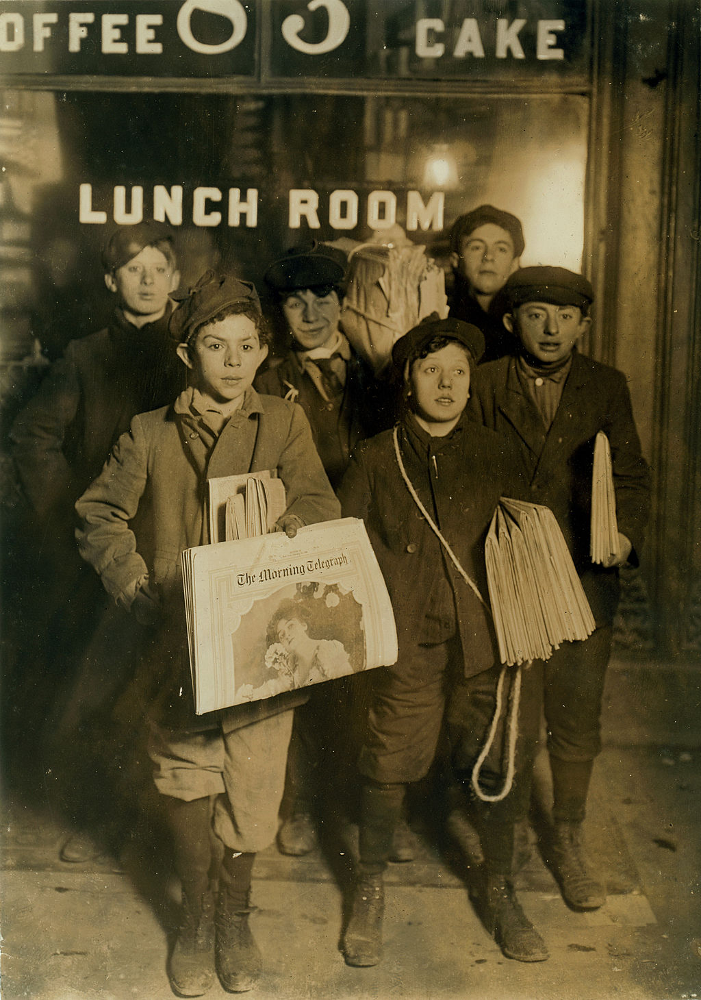

On July 21, 1899, a large number of New York City newsboys refused to distribute the papers of Joseph Pulitzer, publisher of the World, and William Randolph Hearst, publisher of the Journal. The strikers demonstrated across the Brooklyn Bridge for several days, effectively bringing traffic to a standstill,[10] along with the news distribution for most New England cities. They kept others from selling the papers by tearing up the distribution in the streets.[11] The boys also requested from the public that they no longer buy either paper until the strike was settled.[12] Pulitzer tried to hire older men to do the boys' job, but the men understood their stance and wanted no part in defying the boys.[13] Several rallies drew more than 5,000 newsboys, complete with charismatic speeches by strike leader Kid Blink.[14]
So named because he was blind in one eye, Kid Blink (Louis Ballatt)[15] was a popular subject among competing newspapers such as the New York Tribune, who often quoted Blink with his heavy Brooklyn accent depicted as an eye dialect, attributing to him such sayings as "Me men is nobul." Blink and his strikers were the subject of violence, as well. Hearst and Pulitzer hired men to break up rallies and protect the newspaper deliveries still underway.[16] During one rally Blink told strikers, "Friens and feller workers. This is a time which tries de hearts of men. Dis is de time when we'se got to stick together like glue.... We know wot we wants and we'll git it even if we is blind
Although the World and the Journal did not lower their 60¢-a-bundle price, they did agree to buy back all unsold papers and the union disbanded, ending the strike on August 2, 1899
